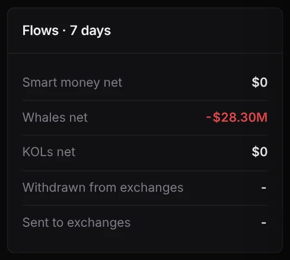

Sharks sold $37.6 million in 24 hours: one wallet dumped $9.5 million of Aave USDC
DeepSea's 24-hour shark feed shows sells outweighing buys by 3 to 1. The biggest sells are dollar tokens, plus $4.6 million of a Circle-linked token.
Key points
- DeepSea's 24-hour shark data across 49 tokens shows $37.62 million sold and $12.42 million bought.
- The largest sell: $9.5 million of Aave Arbitrum USDCn by one wallet, in a single sale.
- Next: $8.49 million of USD₮0 on Optimism and $4.64 million of rCRCL (Circle, Reality Tokenized) on Arbitrum.
 What DeepSea's data shows
What DeepSea's data shows
DeepSea tracks "sharks", large wallets whose owners are mostly unknown. Its 24-hour aggregate, read at 6:52 a.m. ET, covers 49 tokens: sharks sold $37.62 million and bought $12.42 million, a net sell of about $25.2 million. DeepSea's tool shows 24 hours, not a 12-hour window.
Biggest sells not offset by buying, with buys of the same token in brackets:
- Aave Arbitrum USDCn (Arbitrum): $9.50 million ($0)
- USD₮0 (Optimism): $8.49 million ($0.44 million)
- rCRCL, Circle (Reality Tokenized) (Arbitrum): $4.64 million ($0)
- rSPCX (Arbitrum): $1.66 million ($0)
- USDG (Arbitrum): $1.46 million ($0.64 million)
- AUSD (Monad): $1.18 million ($0.27 million)
- cbBTC (Monad): $0.80 million ($0.04 million)
Two heavily traded tokens are left out because buying almost cancelled selling: OP ($2.56 million sold, $2.52 million bought) and mUSD ($1.58 million, $1.52 million). The largest buys were smaller: strUSD $1.26 million, reUSD $0.71 million and WLD $0.51 million. DeepSea's Aave USDCn page shows whale net flow of -$28.30 million over 7 days.

Data: DeepSea (desea.io), checked November 17, 2026, 6:52 a.m. ET.
Checking the numbers
Most of the biggest sells are priced near $1. CoinGecko had USDC at $0.9996 at 6:54 a.m. ET, so the dollar amounts match token counts. The three largest sells total $22.6 million, 60% of all sells. The Aave USDCn and rCRCL sells were each a single trade by one wallet. Owners are unknown, and DeepSea does not show where the money went. Data from DeepSea and CoinGecko.
Some of this is not new. As we reported, one shark sold $4.64 million of rCRCL and $1.66 million of rSPCX, and $29.5 million of USDC left Aave on Arbitrum. Those same rCRCL and rSPCX trades, and the Aave USDCn sale, are still inside this 24-hour window. What is new here is the full 24-hour total and the USD₮0 sells.
Biggest shark sells in 24 hours
US$ million
Source: DeepSea 24-hour shark aggregate, 6:52 a.m. ET, November 17, 2026
New to this?
A sale of a dollar-linked token is not always a bearish bet. A wallet can sell one stablecoin (a token pegged to the dollar) for another, or withdraw money from a lending pool such as Aave, and DeepSea may record that as a sell. Sharks are DeepSea's label for large wallets, not a judgment on what they will do next.

LC Insight analysis
This section is our reading of the facts above, not a statement of fact.
- We think the dollar-token sells say more about cash moving between products than about a market view. Moves like these can be a withdrawal, not a bet against crypto.
- The Circle-linked rCRCL sale, already covered, is the clearest non-dollar sell. Its market cap on DeepSea is only $8.01 million, so $4.64 million is a large share.
- This is a data view, not a forecast.
What's next
- Whether the Aave USDCn whale outflow continues
- Where the $9.5 million lands
- Whether sharks' net selling holds over the week
Disclaimer. This article is based on public information and the sources listed below as of the update time shown. It is for information only and is not investment, legal or tax advice. Figures may change as companies and authorities publish new data.